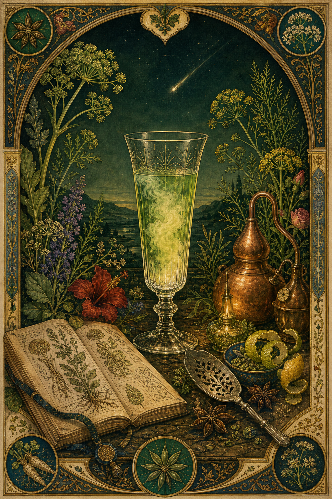
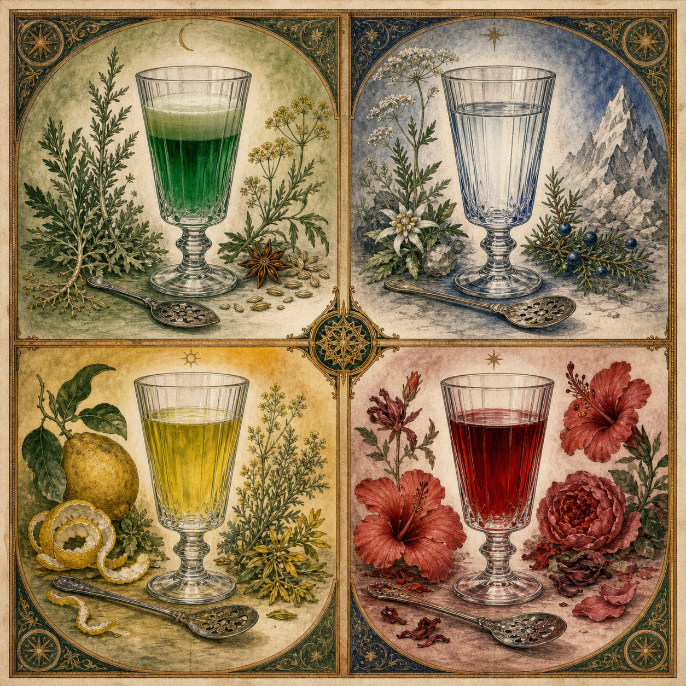
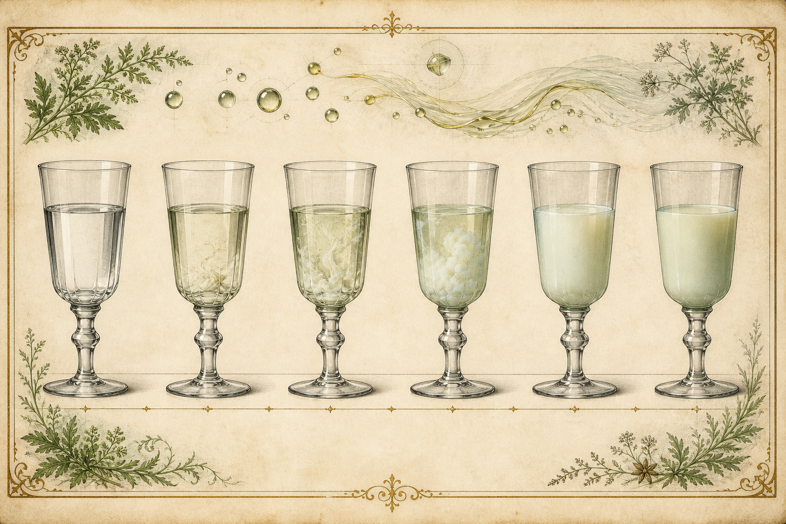

Contents
Six books, one green thread
What begins as a bitter plant becomes a spirit, a ritual, a myth, and a way of seeing.
The four potions are the book’s recurring characters. They return in the history, botanical plates, chemistry diagrams, cultural references, garden plans, and laboratory records.
The physical object
A book meant to be opened flat
- Format: approximately 200 pages, 9 × 12 inches, generous margins, sewn binding, and a cloth or deep-green paper case.
- Surface: warm uncoated stock for text and botanical plates, with occasional vellum overlays and full-bleed color signatures.
- Navigation: six books, recurring potion marks, folio ornaments, a visual evidence key, and a source note at the first relevant spread.
- Reading modes: continuous history, ingredient trail, laboratory trail, or random opening at a plate or ritual.
Folio rhythm
Every turn changes the temperature
- Front matter — 8 pages: title, dedication, invocation, map of the book, evidence key, and frontispiece.
- Books I–VI — 158 pages: object, history, botanicals, mechanism, culture, garden, and laboratory.
- Practical portfolio — 24 pages: four serves, cocktails, N/A Bloom, flight, listening pour, and six rituals.
- Back matter — 10 pages: formula glossary, plant index, molecule index, sources, credits, and colophon.



Book I
The Potion
Begin with the object in the glass: color, aroma, proof, water, louche, and the four paths of Nowhere’s End.
The Bottle at the Threshold
What is a potion? The bottle, the label, the glass, the spoon, the water, and the ritual of beginning.
The Green Hour
The classic serve: drip, sugar, water, louche, aroma, and the transformation of a clear spirit.
The House Vocabulary
Verte, blanche, bleue, crimson, detour, bitter, floral, camphoraceous, clear, cloudy, and colored.
Book II
The Green Goddess
The long history of a medicinal plant becoming a Franco-Swiss spirit, a colonial and industrial product, a café ritual, a scapegoat, and a revived category.
Wormwood Before Absinthe
Ancient, medicinal, culinary, and household traditions surrounding Artemisia absinthium.
Val-de-Travers
Henriod, Ordinaire, Couvet, Dubied, Pernod, borderland knowledge, and the problem of a single origin legend.
Empire and Army
North Africa, military medicine, water, disease, colonial circulation, and the route home.
The Café Becomes a Theater
Factories, brands, labels, fountains, specialized glassware, workers, clerks, artists, and the social life of the green hour.
Phylloxera and the Wine Question
Vineyard collapse, industrial alcohol, pricing, market competition, and the politics of recovery.
The Green Fairy
Artists, writers, cafés, the visual muse, absinthism, and the making of a supernatural reputation.
The Ban
The Lanfray case, temperance, medicine, wine interests, war, moral panic, Switzerland in 1910, and France in 1915.
Underground and Return
Spain, regional survival, clandestine Val-de-Travers, modern legalization, thujone regulation, and the revival.
Book III
The Living Formula
A botanical atlas organized by what plants contribute: bitterness, anise, camphor, citrus, color, structure, and memory.
The Bitter Garden
Grand wormwood, Roman wormwood, gentian, yarrow, and the architecture of bitterness.
Anise and Fennel
Green anise, trans-anethole, fenchone, licorice perception, and the classic aromatic spine.
The Camphoraceous Line
Hyssop, rosemary, mint, fenchone, pinocamphone, and the boundary between lift and medicinal force.
Citrus, Flower, and Color
Lemon balm, lemon verbena, citrus peel, hibiscus, rose, cornflower, butterfly pea, and calendula.
Roots, Resins, and Fixatives
Angelica, gentian, juniper, mastic, cardamom, grains of paradise, and the ingredients that hold a formula together.
Four Botanical Portraits
Wormwood, anise, fennel, and hyssop as full illustrated specimen spreads.
Book IV
The Invisible Mechanism
What happens in the glass, in the nose, in the nervous system, and in the space between evidence and interpretation.
The Louche
Trans-anethole, ethanol, water, essential oils, solubility, droplets, emulsions, micelles, and the clouding threshold.
Why Some Batches Stay Clear
Cold extraction, distillation, proof, oil concentration, dilution temperature, water hardness, and test design.
The Chemistry of Blue, Green, and Yellow
Chlorophyll, flavonoids, anthocyanins, oxidation, light, pH, and why a blue spirit can turn green-yellow.
The Different Drunk
Alcohol, aroma, bitterness, expectation, ritual, attention, mood, and the possibility of a distinctive subjective state.
Thujone and GABA-A
Pharmacology, metabolism, uncertainty, historical claims, regulation, and why thujone is not the whole story.
Psychedelic Interpretation
Vision, myth, altered-state language, mushroom interactions, and the line between cultural meaning and medical claim.
Book V
The Cultural Atmosphere
What absinthe looks like, what it means, and how long it takes.
Art
Manet, Degas, Van Gogh, Toulouse-Lautrec, Picasso, Oliva, Maignan, Symbolism, labels, bottles, and the Green Muse.
Open the art canonLiterature
Zola, Corelli, Maupassant, Joyce, Wilde’s attributed lore, Crowley, the café sentence, and the written Green Fairy.
Open the literary canonMusic
Cabaret, chanson, Satie, Debussy, the listening room, the timed louche, and four potion sound-worlds.
Open the listening architectureRevelation and Crowley
Apsinthos, the falling star, the Green Goddess, symbolic correspondence, and the uses of inherited myth.
Revelation · CrowleyBook VI
The Garden and the Laboratory
The living work of making Nowhere’s End: growing, harvesting, extracting, measuring, revising, and serving.
The Absinthe Garden
Monument, Colorado: climate, elevation, water, frost, perennials, annuals, containers, and sourced botanicals.
Open the garden planHarvest and Preservation
Fresh versus dried plant material, timing, drying, storage, color retention, and volatile oils.
Distillation and Maceration
Cold extraction, hot extraction, distillation, coloring, filtration, resting, and batch variation.
The Louche Bench
ABV, anethole, water temperature, water hardness, turbidity, photography, and sensory scoring.
Analytical Testing
GC-MS, HPLC, UV–Vis, alcoholometry, particle behavior, stability, and the actuals ledger.
The Four Finished Potions
Formula cards, batch records, tasting paths, revisions, and the final serve for Verte, Bleue, Detour, and Crimson.
Practical portfolio
Recipes, cocktails, and rituals
The book ends each idea in the glass: measured serves, cocktail variations, tasting flights, and rituals that make the chemistry visible without turning the drink into a claim about therapy or intoxication.
The Classic Drip
1 oz absinthe, 4 oz cold water, sugar optional. A slow drip over the spoon; compare the first clear aroma with the full louche.
Verte serve notesBleue: The Clear Bloom
1 oz Bleue, 4½ oz very cold water, no sugar. A restrained clear-style ritual that lets fennel, herb, proof, and water temperature speak.
Bleue serve notesDetour: Citrus Highball
1 oz Detour, cold water to taste, expressed lemon or grapefruit peel. Keep the garnish restrained so the yellow-green profile remains the subject.
Detour serve notesCrimson: Orange Bloom
1 oz Crimson, 3½ oz cold water, expressed orange peel. A tart, floral, table-centered serve built around the red finish.
Crimson serve notesThe Green Beast
1 oz Verte, 1 oz fresh lime, 1 oz simple syrup, and cold water over ice. A bright long drink that turns the bitter spine toward citrus.
Death in the Afternoon
1 oz absinthe topped slowly with chilled sparkling wine. A historical cocktail study in density, bubbles, and changing aroma.
The Sazerac: The Original Cocktail Architecture
Absinthe is not literally the first mixed drink. It is the older cocktail logic: aromatic bitter spirit, sugar, water, dilution, and a prepared glass. The Sazerac crystallizes that logic in New Orleans—first around cognac and Peychaud’s bitters, later around rye, with absinthe as the aromatic rinse or dash.
The N/A Bloom
Zero-proof bitter botanical base, cold water, citrus, and a measured sweetener. Preserve the drip, aroma, and cloud without alcohol.
Open the N/A ritualFour-Potion Flight
Serve Verte, Bleue, Detour, and Crimson in small measured pours with identical water, glassware, and lighting. Compare color, aroma, louche, bitterness, and finish.
Rituals of Nowhere
The classic drip, the silent pour, the listening pour, the garden harvest, the laboratory bench, and the shared table—each with preparation, attention, and a clear return to ordinary life.
Illustrated matter
Plates between the chapters
- Foldout timeline of absinthe history
- Map of Val-de-Travers, Paris, North Africa, and the international trade
- Botanical plates for the core herbs
- Cutaway of a distillery and a café absinthe fountain
- Molecular plate of anethole, fenchone, thujone, and bitter principles
- Sequential louche study from clear to cloudy
- Color atlas: blue, green, yellow, red, and oxidation
- Four potion portraits and four listening-room scenes
Appendices
Reference rooms
- Historical recipes and formula translations
- Botanical index and plant-part glossary
- Molecular index with CAS numbers and sensory notes
- Pharmacology and safety notes
- Legal and regulatory timeline
- Batch actuals and experiment sheets
- Image, music, and literature credits
- Sources, notes, and index
Voice and apparatus
A ritual voice with a laboratory margin
The plant gives the command; the water reveals the gate; the glass records the passage.
The main text will speak in an elevated, initiatory register—ceremonial, paradoxical, sensual, and self-aware—while captions, source notes, formulas, and safety language remain exact. The book may invoke the Green Goddess, but it must also show the molecule, the dose, the evidence, and the limit of the claim.
Editorial gate
The A+ standard
Beauty is not the polish added after the research. It is the form the research takes when it has been understood.
Voice
Crowleyan atmosphere is permitted in the main text; certainty, dosage, and safety remain disciplined. Voice canon · Crowley dossier
Sequence
The reader moves from glass to history, plant, molecule, myth, garden, laboratory, and return. The 200-page folio rhythm gives every temperature a place.
Evidence
History, chemistry, pharmacology, regulation, art, and symbolic interpretation have a visible source trail. Open Sources & Notes
Glass
Four measured house serves, cocktail studies, the N/A Bloom, a tasting flight, and six rituals make the ideas usable without making medical claims. Open Recipes & Rituals
Image
Botanical plates, mechanisms, historical relics, visionary art, recurring symbols, alt text, and captions make beauty accountable. Open the Illustration Bible
Return
The final page brings the reader back to food, water, conversation, ordinary life, and the question that began the book.
Colophon
The book is a journey through one question.
What happens when a bitter medicinal plant becomes a drink, then a myth, then a chemical system, then a personal ritual?
Practical companion
Now pour the book.
The recipes and rituals have their own working table: measured house serves, cocktail studies, tasting flights, listening pours, and six forms of attention.
Visual companion
See how the book becomes beautiful.
The illustration bible defines the plate families, palette, recurring symbols, caption rules, and sixteen anchor images that carry the volume from plant to potion to return.
Scholarly companion
Open the source room.
History, chemistry, pharmacology, botany, art, literature, music, regulation, and symbolic interpretation each have a visible trail.